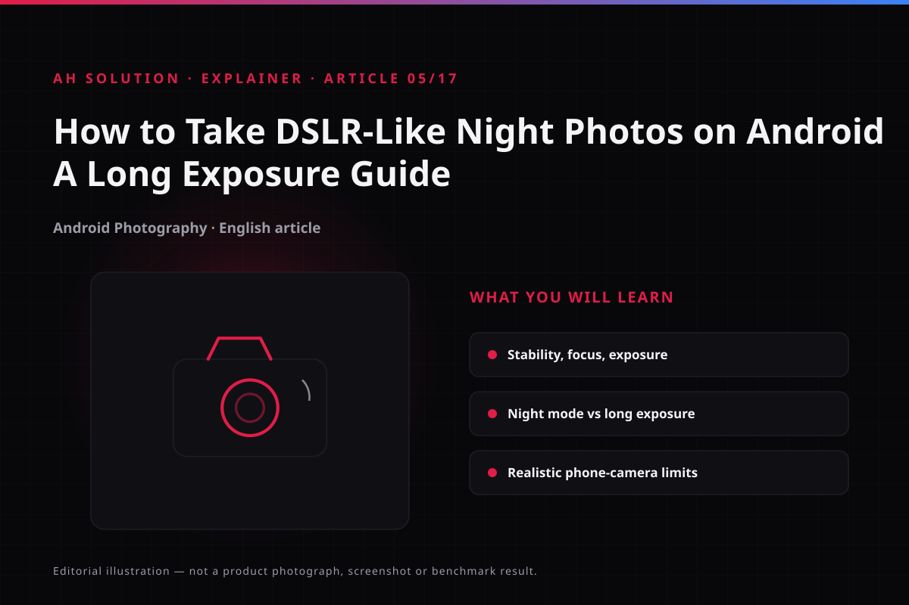

Night photography challenges most people. With little ambient light, a phone camera raises the noise, loses detail and produces blurry shots. The focus of this guide is technique before a sensor upgrade.
The original video dates from 2021. This article updates that context for today's camera ecosystem and offers a practical framework instead of an unrealistic DSLR-like claim: the limits of phone sensors set realistic expectations.
Original video: How to Take DSLR-Like Night Photos on ANY Android! 🌙 | Long Exposure Video published: 2021-07-09T09:35:41Z · Duration: 05:29
What long exposure is and why it matters
In low light the camera needs enough light. A short shutter speed collects less of it, so the image comes out dark or noisy. A long exposure means keeping the shutter open for a few extra seconds so the sensor collects more light.
The trade-off is straightforward: if the phone moves, the whole frame blurs, so stability is the first factor. The "DSLR-like" claim can also be misleading: a DSLR's larger sensor and lens gather more light than a phone does. Phones have improved, but true parity should not be expected — that was the realistic expectation when the video was made, and it still is.
Stability: the factor most people miss
Before a night shot, make the phone rock solid. Even a small movement can make stars or distant lights streaky.
Practical options for stability:
- Tripod: the most reliable option. A small pocket tripod helps when there is no flat surface.
- Flat surface: a table, bench or ledge — the minimum setup without a tripod.
- Avoid handheld: the best results come from a tripod. With no tripod at all, Night mode is safer, since it combines multiple frames to compensate for shake.
How to lock focus and exposure
At night, autofocus gets confused when contrast is low, so locking focus and exposure is necessary. Many camera apps offer an "AE/AF lock": lock focus on a bright edge or a distant light, and then compose the frame. Exposure lock keeps streetlight overexposure and dark sky underexposure under control. These steps look small, but the difference shows clearly in the results.
Which controls actually exist: this is not the same on every phone. On Google Pixel there are Night Sight, Motion Long Exposure and Pro Controls (focus, shutter speed, ISO), but Google's own device-wise feature list says these features do not come with every model — Pro Controls are limited to Pro models. Other brands' stock cameras differ too: some offer manual ISO and shutter, some only a Night mode and an exposure slider. Check the modes in your own camera app first, and do not assume a control will be there.
Night mode versus true long exposure
It is worth being clear about how Night mode and a "true long exposure" differ.

| Feature | How it works | When to use it | Limitations |
|---|---|---|---|
| Night Mode (computational) | Aligns and combines multiple short exposures, reduces noise | Handheld, or when no tripod is available | Artifacts in moving scenes; limited control over light trails |
| True Long Exposure | Keeps the shutter open for a fixed number of seconds, one continuous capture | With a tripod, for traffic trails and light painting | Needs complete stability; overexposure from light pollution; not on every phone or app |
The realistic picture is that most stock camera apps on phones offer no granular manual long exposure. Third-party camera apps give manual controls, but they do not work the same way on every device. GCam ports improve the computational approach, yet they are not stable for every device.
Light pollution, ISO and shutter trade-offs
Location matters a great deal — city lights wash out the dark sky, so for stars it is better to move away from the city.
Where manual control is available (ISO, shutter speed), the trade-offs are worth understanding:
- More shutter time: more light is collected, but the risk of shake and overexposure rises.
- More ISO: the image gets brighter, but noise increases noticeably.
- Balanced approach: on a tripod, try a medium shutter with a moderate ISO; handheld, Night mode is better.
These are general principles. The exact numbers cannot be copied from the video demo, because they were specific to that device and app.
Shooting scenarios and expected results
For the setups that work most often, this is what to expect:
- Handheld street scene: use Night mode — a bright image with low noise, moving subjects slightly soft, and no light trails.
- Tripod and traffic trails: with manual shutter or long exposure, headlights become smooth lines. On Night mode alone the trail is faint or broken.
- Stars or a dark sky: keep the phone stable and get away from city lights — some faint stars may appear, without DSLR detail. The Pixel astrophotography steps help here.
- Light painting: this needs a true long exposure. Without manual control, skip the scene — the effect cannot be created in post-processing.
Post-processing and realistic expectations
After the capture, adjusting contrast, shadows and highlights can improve the result, but over-processing gives an unnatural look.
Phones do produce impressive night shots, but a different dynamic range, noise handling and lens physics mean there is no DSLR parity — the gap in sensor size cannot be bridged.
Troubleshooting and limitations
- Blurred shots: use a tripod, try the AE/AF lock, or switch to Night mode when shooting handheld.
- Overexposed lights: lock the exposure, or try a lower shutter speed and ISO where manual control exists.
- Noisy images: keep the ISO low, try a location with less light pollution, and use computational Night mode.
- No long exposure option: it is not on every phone — check the stock camera, or try a manual camera app with realistic expectations.
Safety and privacy
Keep safety in mind when shooting at night. Avoid isolated locations late at night, and do not spend long stretches on the roadside in traffic areas. Camera app permissions are normal, but when installing third-party apps follow the choose-android-apps-safely.html guide. After installing, you can review and revoke camera, location and files access app by app through the Android permissions manager.
Frequently asked questions
Does every Android phone have a long exposure option?
No. On some phones only Night mode is available; true long exposure is limited to flagship and some mid-range models. Check the modes in your own stock camera app.
Does GCam give better night photography results?
GCam ports can improve results on many devices, but they are not stable and installation needs care. The video named no specific app, so test it and decide for yourself.
How can I improve night photos without a tripod?
Find a flat, stable surface, keep the phone still and use the built-in Night mode — the most practical approach.
Can the effect of light pollution be reduced?
Changing location is the most effective step, because a dark sky away from the city gives a cleaner result. Filters or aggressive post-processing can look unnatural.
Does long exposure drain the battery?
Slightly, because capture and processing take longer. It becomes noticeable when you take repeated attempts.
Final recommendations
Night photography follows a simple formula: stay stable, lock focus and exposure, and choose the right mode. Handheld, use Night mode; with a tripod and manual control, try a true long exposure. Let go of the "DSLR-like" target and work with what your phone can do.
Location, technique and practice make the difference — combine the context of the video with today's general principles.
Resources and official links
- Pixel Camera Help: night and low-light photos — the official steps for Night Sight and astrophotography.
- Pixel Camera Help: photo modes and Pro Controls — which models offer Long Exposure and manual controls.
- Android permissions manager guide — how to check and revoke permissions.
-